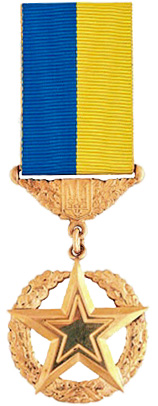

Герой України
Звання Геро́й Украї́ни — державна нагорода України, найвищий ступінь відзнаки в Україні, що надається громадянам України за здійснення визначного геройського вчинку або видатного трудового досягнення. Героєві України вручається орден «Золота Зірка» за здійснення визначного геройського вчинку або орден Держави — за надзвичайні трудові досягнення.
Звання Герой України може бути надано, як виняток, посмертно іноземцю,
нагородженому орденом Героїв Небесної Сотні, за здійснення визначного
геройського вчинку, пов'язаного з відстоюванням конституційних засад
демократії, прав і свобод людини під час Революції Гідності
(листопад 2013 року — лютий 2014 року).

Історія нагороди
- 23 серпня 1998 року Указом Президента України Л. Д. Кучми № 944/98 встановлена відзнака Президента України «Герой України» (з врученням ордена «Золота Зірка» або ордена Держави). Указом також затверджені Статут відзнаки Президента України «Герой України» та описи орденів «Золота Зірка» та Держави.
- 16 березня 2000 року Верховна Рада України прийняла Закон України «Про державні нагороди України», у якому було передбачено, що державною нагородою України — вищим ступенем відзнаки в Україні є звання Герой України (з врученням ордена «Золота Зірка» або ордена Держави). Було установлено, що дія цього Закону поширюється на правовідносини, пов'язані з нагородженням осіб, нагороджених відзнаками Президента України до набрання чинності цим Законом; рекомендовано Президентові України привести свої укази у відповідність із цим Законом.
- 2 грудня 2002 року Указом Президента України № 1114/2002 був визнаний таким, що втратив чинність, попередній Указ № 944/98; затверджено новий Статут звання Герой України; затверджені нові описи ордена «Золота Зірка» та ордена Держави звання Герой України і нової мініатюри до них.
Нагородні атрибути звання Герой України
-
Орден
-
Види орденів
- «Золота Зірка»
- Орден Держави
-
Призначення
- Вручається за героїчний вчинок
-
Види орденів
-
Грамота про надання звання
-
Характеристика
- Офіційний документ
-
Призначення
- Підтверджує присвоєння звання
-
Характеристика
-
Мініатюра ордена
-
Опис
- Зменшена копія ордена
-
Використання
- Для повсякденного носіння
-
Опис
-
Посвідчення
-
Характеристика
- Іменний документ
-
Призначення
- Підтверджує статус Героя України
-
Характеристика